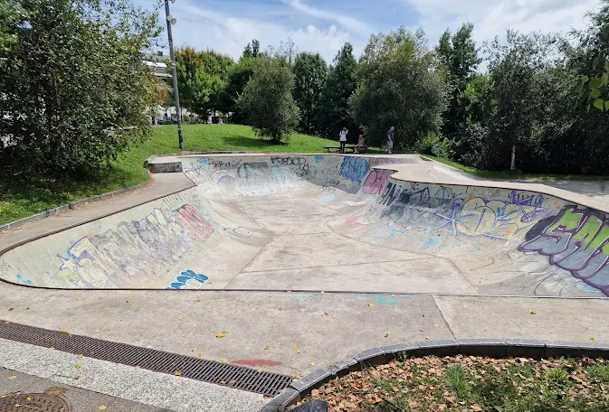
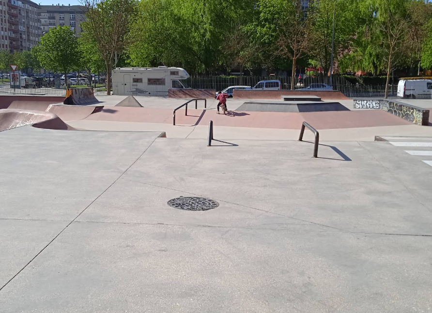
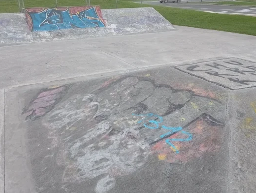

¡Explora los mejores skateparks del País Vasco y alrededores! Encuentra tu próximo spot para patinar.

Skatepark de Aiete_bowl (San Sebastián)
Ver ubicación

Pumptrack Zorrotza (Bilbao)
Ver ubicación

Skate Santa Lucía (Vitoria-Gasteiz)
Ver ubicación

Skatepark Lasesarre (Barakaldo)
Ver ubicación

Pumptrack Irun
Ver ubicación

Sautxi Skatepark Eibar
Ver ubicación